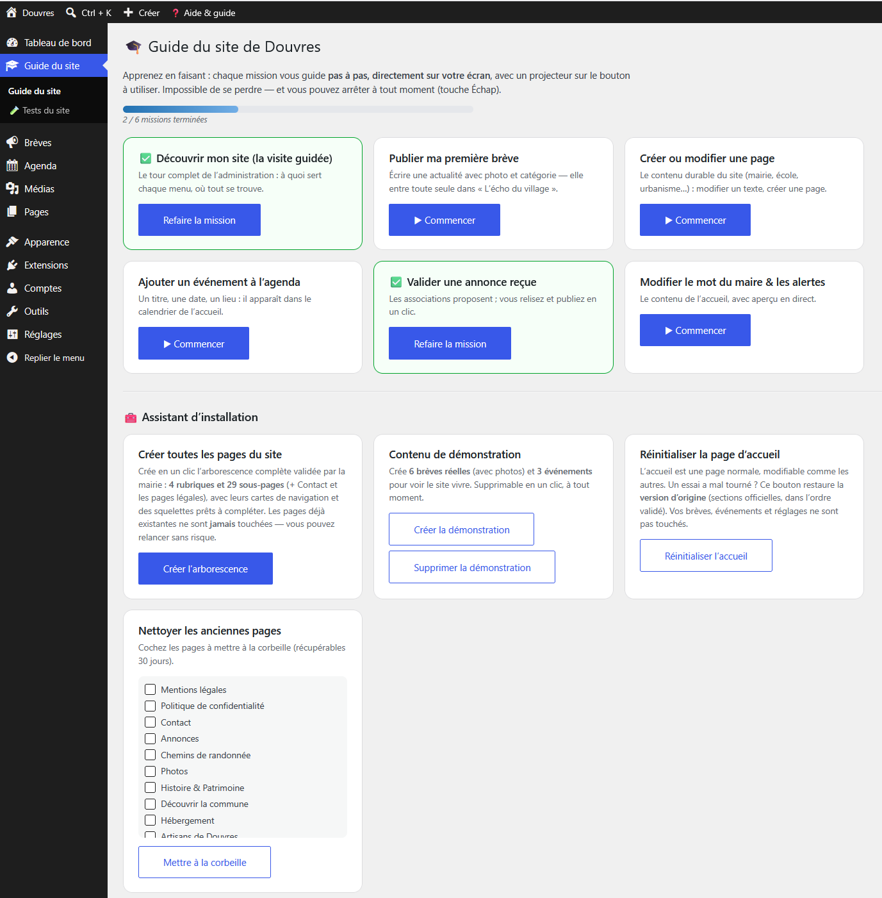

Refonte complète du site internet de la commune
Un thème enfant WordPress pour rendre un village autonome
Le cœur du stage. Remplacer un site de plus de vingt ans, maintenu par un prestataire, par un site que la mairie peut conduire seule. Un thème enfant WordPress développé de bout en bout, et un projet qu'il a fallu avoir le courage de recommencer à zéro.
Le besoin, et le fardeau
La commune possède un site internet depuis plus de vingt ans. Il a rendu de grands services, mais il a vieilli : difficile à modifier, daté visuellement, et surtout dépendant d'un prestataire extérieur pour le faire vivre. La nouvelle équipe municipale voulait un site moderne, à l'image du village, que la mairie pourrait gérer seule.
L'existant est à la fois une richesse et un fardeau : près de 4 000 articles, plus de 8 500 photos et un millier de documents. Plus de vingt ans de la mémoire du village. Rien ne doit être perdu.
Le choix de la solution
Aucun outil ne m'a été imposé, et c'est justement le problème : personne à la mairie ne pouvait m'imposer un langage ou une base de données. On m'a fixé une destination, pas un chemin. J'ai donc étudié les alternatives avant de trancher.
- Développement sur mesure, la solution la plus séduisante pour un développeur, liberté totale. Défaut rédhibitoire : personne ne pourrait maintenir mon code après mon départ.
- Drupal - puissant, mais complexe et pensé pour de grandes organisations.
- Joomla - plus accessible, mais une communauté qui diminue d'année en année.
- Services clés en main (type Wix), très simples, mais par abonnement, avec les données du village stockées chez un tiers.
- Agence - exactement la dépendance dont la commune cherchait à sortir.
- WordPress - retenu : gratuit, communauté immense, il fait fonctionner plus de 40 % des sites du monde, l'ancien site tourne déjà dessus (ce qui facilite la récupération du contenu), et la secrétaire de mairie peut publier un article sans écrire une ligne de code.
Le défaut assumé de WordPress
Sa popularité en fait une cible privilégiée. Ce choix impose donc des mises à jour régulières et une vigilance réelle sur la sécurité, ce que la documentation technique livrée à la mairie formalise noir sur blanc.
L'architecture retenue
Le site repose sur un thème enfant nommé douvres-enfant, basé sur Twenty Twenty-Five, le thème par défaut de WordPress. Un thème enfant hérite entièrement du parent et se contente d'ajouter ou de surcharger : les mises à jour du parent n'écrasent jamais mon travail.
Twenty Twenty-Five est un thème en blocs (Full Site Editing) : l'intégralité du site (en-tête, pied de page, pages, articles) se compose visuellement dans l'éditeur de site, sans code. C'est la condition technique de l'autonomie de la mairie.
style.css- carte d'identité du thème et lien au parent (Template: twentytwentyfive).theme.json- réglages globaux : palette, polices, largeurs de mise en page.functions.php- la logique PHP sur mesure.templates/,parts/,patterns/, gabarits, parties de modèle et compositions en blocs.- Le
theme.jsonrègle l'apparence, lefunctions.phprègle le comportement, les gabarits règlent la structure.
Les fonctionnalités développées
- Système de brèves à quatre emplacements, une meta
douvres_placerange chaque actualité dans Actualités, Ça vient de se passer, Archives ou En attente. La mairie publie et choisit l'emplacement, sans toucher à la mise en page. - Archivage automatique sans cron, au-delà d'un délai paramétré, une brève bascule seule en Archives. Je n'utilise pas WP-Cron, qui ne se déclenche qu'à la visite d'un internaute et devient peu fiable sur une commune à faible trafic : j'emploie un transient comme garde-fou, ce qui évite de relancer une requête lourde à chaque chargement.
- Galerie pleine largeur alimentée par les brèves « Actualités », via le mécanisme natif
alignfullplutôt qu'un bricolage CSS fragile en100vw. - Navigation fixe - en-tête accrochée en haut, plate puis ombrée au défilement. Elle s'appuie sur une cale injectée en JavaScript et une classe
dvr-fixnavsur lebody, pour gérer proprement le décalage de la barre d'administration WordPress. - Lecteur en surimpression, cliquer une brève ouvre un lecteur sur fond sombre par-dessus la page, plutôt que de quitter l'accueil.
- Moteur zigzag - la présence d'un bloc galerie dans un article déclenche seule une mise en page alternée texte / images.
- Agenda automatique - alimenté par une meta
date_evenementposée sur les articles concernés.
La charte graphique de la commune
Réglée entièrement dans theme.json : bleu #1c5191, or #dca828, Marcellus pour les titres, Spectral pour le corps, Hanken Grotesk pour l'interface. Largeur de contenu portée à 1080 px (contre ~645 px par défaut) et blocs larges à 1320 px. Le défaut de Twenty Twenty-Five est pensé pour du texte de blog, trop étroit pour un site municipal riche en photographies.
Le moment qui a tout changé
Dès le départ, j'avais recommandé un design résolument moderne. Le choix s'est porté sur un compromis : du moderne tout en conservant l'esprit de l'ancien site. J'avais prévenu que ce mélange risquait de ne satisfaire personne. C'est exactement ce qui s'est passé. Réunion après réunion, je modifiais le design, et réunion après réunion il ne convainquait toujours pas.
Le jeudi 18 juin au soir, en réunion du comité de communication, j'ai posé le problème clairement : il fallait arrêter de retoucher un compromis qui ne satisfaisait personne, et prendre une décision. La décision a été prise ce soir-là, tout reprendre à zéro.
Le lendemain je présentais mon bilan de mi-stage à l'école. Le lundi 22 juin, je recommençais, avec une méthode inverse : plus question de développer avant validation. J'ai proposé des modèles, je les ai peaufinés trois jours, et le maire les a validés le 26 juin. La semaine suivante j'ai développé sur cette base, avec une deuxième validation du comité de communication le 30 juin. Le 2 juillet, dernier jour de stage, la première version était fonctionnelle.
L'écart au planning, et sa justification
Le planning prévisionnel prévoyait une semaine de découverte et d'audit, trois semaines de construction, une semaine de finalisation. La réalité a concentré la refonte sur les deux dernières semaines : une pour les modèles et leurs validations, une pour le développement.
Cet écart ne vient pas d'une mauvaise planification. Il vient d'un compromis de départ qui ne fonctionnait pas, et qu'il a fallu avoir le courage d'abandonner. J'en tire une règle que je garderai : désigner dès le départ qui décide, et faire valider les modèles avant de développer.
En images

Les preuves
Les documents ci-dessous constituent les traces de cette réalisation. Leur état indique s'ils sont consultables ici, confidentiels, ou encore non publiés.
- Documentation technique du thème Consultable Document Annexe 1 du rapport de stage, également intégrée en page privée de l'administration du site.
- Captures d'écran du nouveau site Consultable Captures L'administration du site : le guide en six missions et l'assistant d'installation.
- Cahier des charges validé avec le comité de communication Non publié Document
- Modèles validés par le maire - 26 juin 2026 Non publié Maquettes
- Historique des commits du thème douvres-enfant Consultable Dépôt Dépôt public. Le code du thème communal reste chez la mairie ; celui de ce portfolio est ici.
- Support de soutenance finale Consultable Présentation Présentation de la production devant le jury, le 3 juillet 2026.
{kind=link}
Ce que cette réalisation démontre
Compétence 1.3 : Développer la présence en ligne de l'organisation
- Participer à l'évolution d'un site Web exploitant les données de l'organisation : refonte complète, reprise de vingt ans de contenus.
- Participer à la valorisation de l'image de l'organisation sur les médias numériques : charte graphique communale, validation par les élus.
- Tenir compte du cadre juridique et des enjeux économiques : sortie de la dépendance au prestataire, mentions légales, site de service public.
- Référencer les services en ligne de l'organisation et mesurer leur visibilité.
Ce que j'en retiens
« Alerter ne suffit pas. Il faut aussi savoir demander une décision, au bon moment, à la bonne personne. »